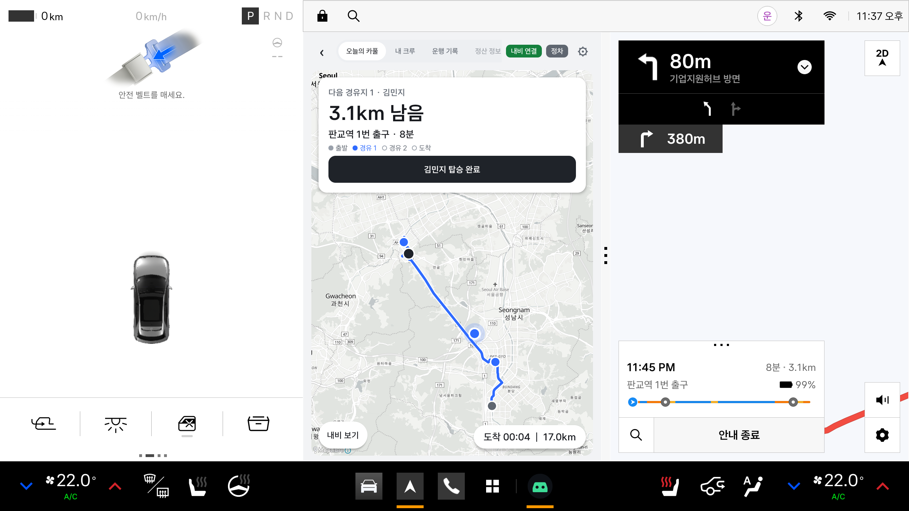
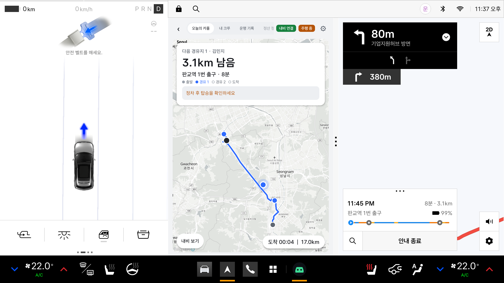
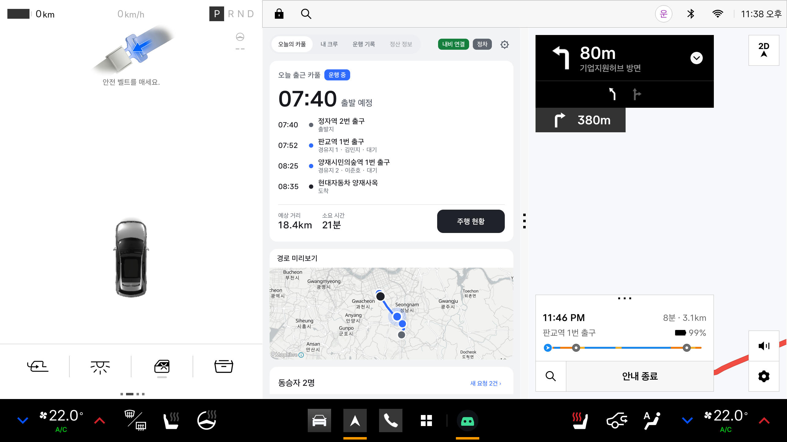
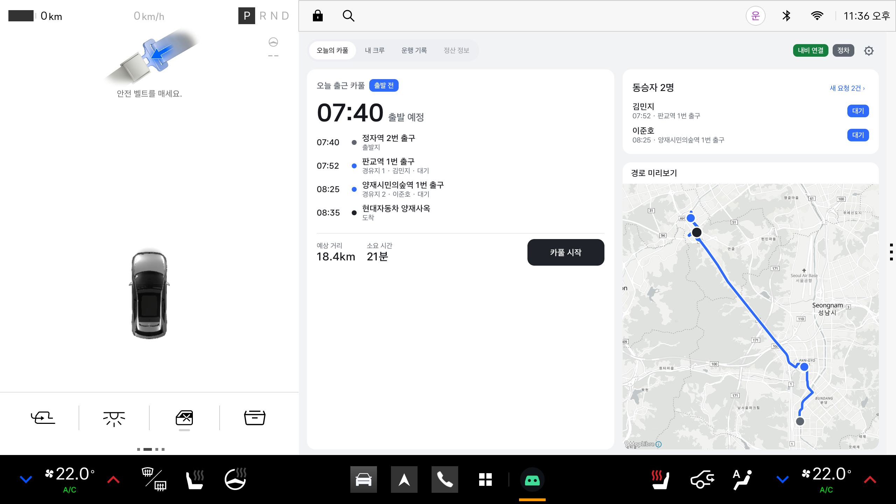
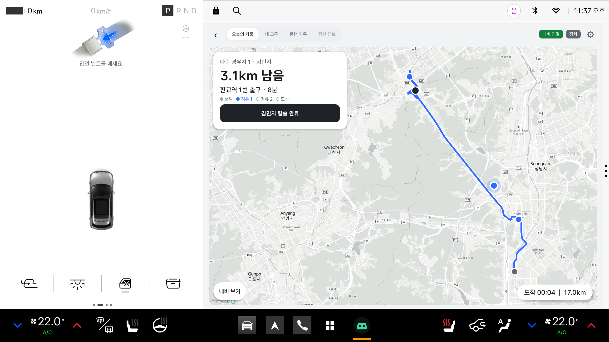
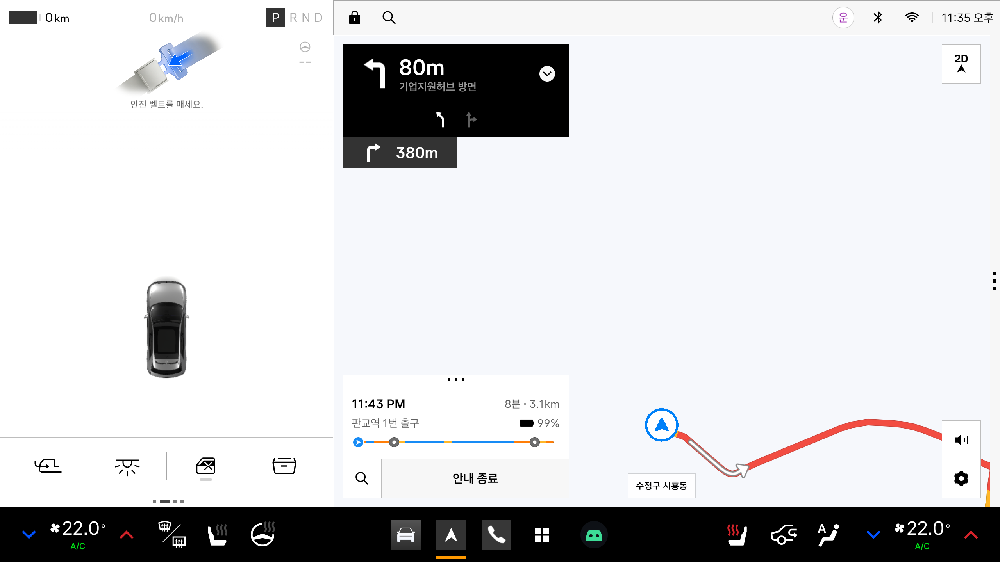

Pleos Connect Emulator에서 실제로 실행해 캡처한 화면입니다. 와이어프레임(Lo-Fi 1차)의 V-02 오늘의 카풀과 V-06 주행 중 현황을 기준으로 만들었습니다.
| 항목 | 결과 | 근거 (에뮬레이터 확인) |
|---|---|---|
| 내비 위 팝업 / 오버레이 | 불가 | NaviHelper 22개 API 중 오버레이 기능 없음. "다른 앱 위에 표시" 설정 화면 없음. Driving view는 "앱이 가릴 수 없다"고 문서에 명시 |
| Heads-up 알림 배너 | 미표시 | 알림 센터에는 들어가지만 배너는 시스템 앱만 표시되는 것으로 보임 (공식 문서 없음) |
| 내비 + 페어카 분할 화면 | 가능 | window bar(⋮)를 끌면 [Driving view | 내비 | 페어카]. 주행 중(기어 D)에도 유지 |
| 앱 안 자체 지도 | 가능 | MapLibre 지도 SDK. 경로선·마커·색 커스텀. Google 지도는 Play 서비스가 없어 불가 |
| 내비 실시간 정보 표시 | 가능 | 남은 거리(m)·시간(초)·현재 위치를 NaviHelper에서 받아 카드로 표시 (내비 화면 값과 일치) |
| 앱이 분할을 직접 요청 | 불가 | API 없음. 사용자가 window bar / 3손가락 제스처로 조작 |
왼쪽 Driving view는 시스템이 고정으로 표시하고, 오른쪽 앱 영역에 앱 1개(넓게) 또는 2개(나란히)가 들어갑니다. 위에 겹쳐 띄우는 층은 앱에 열려 있지 않습니다.
페어카 카드의 “3.1km 남음 · 8분”과 오른쪽 내비의 “8분 · 3.1km 판교역 1번 출구”가 같은 값입니다 (NaviHelper 실시간 수신).

CarUxRestrictions가 주행 중으로 바뀌면 상단에 “주행 중”이 표시되고, 탑승 확인처럼 정차 중에만 할 조작은 막힙니다. 왼쪽 Driving view도 주행 모드로 바뀝니다.

좁은 창에서는 같은 화면이 1단으로 자동 배치됩니다(카드 → 경로 미리보기 → 동승자). 화면 크기가 바뀌어도 앱을 다시 시작하지 않습니다.

페어카가 앱 영역 전체를 쓰면 와이어프레임처럼 2단 구성과 큰 지도가 가능합니다. 다만 주행 중에 내비를 보려면 화면을 전환해야 합니다.



MANAGE_OVERLAY_PERMISSION 설정 화면이 시스템에 없음 → “다른 앱 위에 표시” 권한을 줄 방법이 없음와이어프레임의 숫자·지도 요소가 어디서 오는지 정리했습니다.
| 와이어프레임 요소 | 가능 여부 | 데이터 / 방법 |
|---|---|---|
| V-06 왼쪽 속도 78km/h, “450m 좌회전” | 이미 있음 | Pleos Driving view (시스템 화면). 페어카가 만들 필요 없음 |
| “403m 남음”, “경유지1 · 4분” | 가능 | NaviHelper onWayPointInfo — remainDistance(m), remainTime(초) |
| “도착 08:34 | 82.1km” | 가능 | NaviHelper onDestinationInfo / onDrivingInfo |
| 지도 + 출발·경유·도착 마커 | 가능 | 자체 지도 SDK (MapLibre) + 카풀 일정 좌표 |
| 지도 위 내 차 위치 | 가능 | NaviHelper getCurrentLocationInfo (화면 표시 중 5초 간격) |
| 지도 위 파란 경로선 | 조건부 | NaviHelper는 경로 좌표를 주지 않음 → 별도 길찾기 API. Pleos 내비 경로와 다를 수 있음 |
| 회전 안내를 앱에서 직접 표시 | 가능 | NaviHelper getTBTInfo (예: TURN_LEFT · 4m · 이름 없는 도로) |
| Pleos 내비 지도를 앱 안에 넣기 | 불가 | 지도 View를 넘겨주는 API 없음 |
| 경유지 3곳 이상 | 제한 | NaviHelper 경유지는 최대 2곳. 3명 이상이면 앞 픽업 후 경로 재설정 |
| 항목 | 이유 / 방법 |
|---|---|
| 주행 중 앱 자체 지도 허용 여부 | 지도 허용 예시는 Maps/Navigation 카테고리에만 있음. 페어카(Mobility Services 예상)은 Pleos 사전 문의 필요. 허용 안 되면 주행 중엔 숫자 카드만 표시 |
| 경유지·목적지 도착 이벤트 | 에뮬레이터는 차 속도만 바뀌고 내비 위치가 고정 → 실차/Devbox에서 확인 |
| 서드파티 Heads-up 알림 | 공식 문서 없음, 에뮬레이터에선 미표시 → Pleos 문의 |
| 상용 지도·길찾기 API 선정 | 프로토타입은 OpenFreeMap 타일 + OSRM 데모 서버(상용 불가). 서비스용 지도 사업자 API의 AAOS 동작·약관 확인 |
| 다른 화면 크기 | Connect-W, 14.6 / 17인치 — Pleos 폼 팩터 테스트(가상 디스플레이) |
| distractionOptimized 선언 심사 | 주행 중 사용 선언(AAOS 표준). Pleos 문서에 방식 미기재 → App Market 사전 확인 |
adb forward tcp:8088 tcp:8088 후 http://127.0.0.1:8088/ Virtual Console에서 기어 D/P.